桌子与凳子
火锅得围着桌子吃。模组里有两套桌凳：矮的一套（贴近地面，像家里火锅桌）和高的一套（1.5 格高，像店里的高脚桌），每套都有 11 种木头：
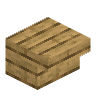
橡木火锅桌云杉木火锅桌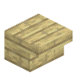
白桦木火锅桌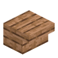
丛林木火锅桌金合欢木火锅桌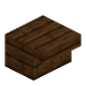
深色橡木火锅桌红树木火锅桌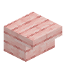
樱花木火锅桌竹火锅桌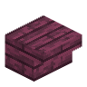
绯红木火锅桌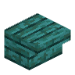
诡异木火锅桌橡木、云杉、白桦、丛林、金合欢、深色橡木、红树、樱花、竹、绯红、诡异——桌子贴图用的就是原版木板，配方也只是换成对应的木板。
矮火锅桌
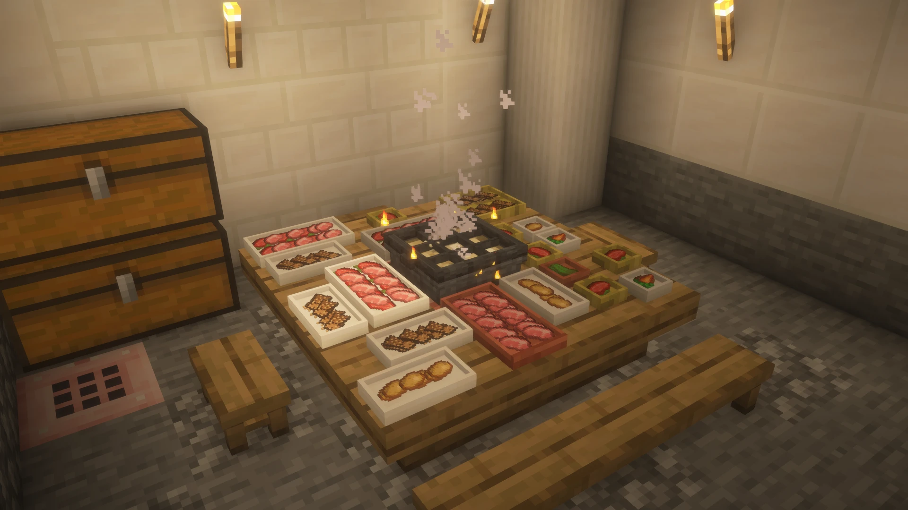
橡木火锅桌
合成
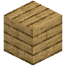
4
- 桌面和矮灶台的砖面齐平，灶台能直接嵌在桌子中间，像一张整桌。
- 桌面下面像倒放的楼梯，朝外一侧往里收 4 像素，给膝盖留位置。
- 会自己连：哪边挨着另一张桌子（矮桌、高桌都行）或灶台就自己铺满，连成长桌。
- 木头桌子会着火，能用斧头快速挖。
高火锅桌
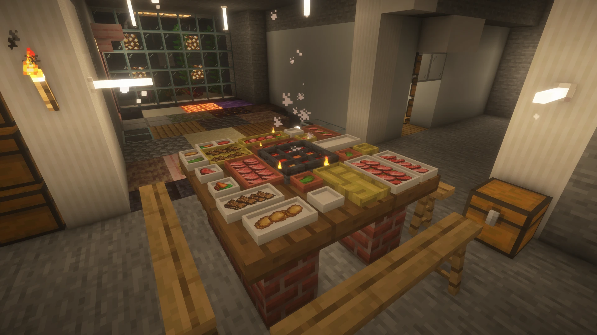
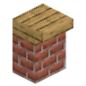
橡木高火锅桌 橡木高火锅桌
合成
3
- 1.5 格高，桌面悬出一圈，下面是桌腿，朝外也收进 4 像素留腿部空间。
- 下面一格是砖块，上面是木板（配方里有 3 个砖块）。
- 和高灶台搭配：灶台火口正对桌子时，桌子那侧会去掉砖身只留木头，方便看火。
- 同样会自己连，和矮桌、灶台都能连。
- 方块比一格高，准星对着桌面上的东西也能选得中（盘子、碗放在高桌上不会点不到）。
桌上摆东西
- 盘子、碗、饮料、蘸料碗都放桌面上，见盘子、碗与饮料。
- 小摆件（灯笼、花盆、蜡烛、蛋糕等）放火锅桌上会贴住桌面，不再浮空。
- 其他普通方块：矮桌上浮空 5 像素，高桌上嵌进 7 像素，当装饰也不错。
石料和金属火锅桌自 0.1.4-alpha
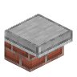
平滑石头火锅桌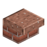
磨制花岗岩火锅桌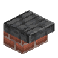
磨制深板岩火锅桌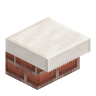
石英火锅桌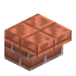
切制铜火锅桌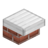
铁火锅桌木头的之外还有 9 种桌面：平滑石头、磨制安山岩 / 闪长岩 / 花岗岩 / 深板岩 / 黑石、石英、切制铜、铁；矮桌、高桌各一套，一共 18 张。桌身还是红砖，桌板换成这些材料。
平滑石头火锅桌
合成
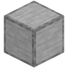
4
板凳和条凳
| 凳子 | 高度 | 配方一次出 |
|---|---|---|
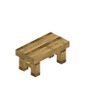 橡木板凳 |
矮，坐高约 7/16 格 | 3 个 |
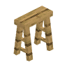 橡木条凳 |
一格高，凳面和桌面齐平；坐高 1.25 格 | 3 个 |
橡木板凳
合成
3
橡木条凳
合成
3
两种凳子都有 11 种木头，配方只是换对应木板。
摆放
- 朝向：放的时候面朝哪边，凳子（和坐上去的人）就面朝哪边。
- 连成长凳：同一直线上挨着的两个凳子（高矮一样）会自己连成长凳，中间腿去掉、两头腿往里收，垂直放的不连。一条最长连 3 格，再往旁边放就不连了。0.1.2-alpha 里放的时候朝向一样才连；0.1.3-alpha-hotfix1 起不管站哪边放都会连。
- 条凳腿是斜着的「A」字腿，由代码画出来；碰撞与选中范围和凳面同宽，贴着条凳走动不会卡脚。
条凳搭起来能当梯子自 0.2.2-alpha
一条条凳就是一格高，叠起来正好是一级级台阶。
- 手拿条凳（不潜行）右键已经放好的条凳，它会自动顺着这一摞往上找，直接叠到最顶上，一次消耗 1 条。 - 也可以直接对着凳子的顶面放，效果一样。 - 最多叠 16 层，再高就放不上了。
- 叠到 2 层以上，这一摞就成了梯子：贴着凳子任意一面往前走或按跳跃，就能像爬梯子一样一级级上下。单摆一张不会触发，免得围着桌子走动时不小心爬上去。
- 顶层照样能坐：空手右键最上面那张，坐姿和普通条凳一样。中间层（头顶还压着凳子）坐不了。
- 坐着的时候别人往你头顶叠凳子，你会自动起身，把位置让出来。
- 拆凳子照常挖，坐在上面的人会被放下。
橡木条凳竹条凳
小提示
叠条凳顺手，拆也顺手：想够高处的东西、想在火锅桌边搭个「上铺」，几条凳子就够。把条凳往条凳上叠、或者顺着凳塔往上爬，都会解锁成就「步步高升」。
怎么坐
- 空手（或手里拿不是方块的东西）右键凳子就坐上去了。
- 点凳子中间坐中间；点两格交界处坐两格中间。
- 两个人之间至少隔一整格，不会挤在一起。
- Shift（潜行）起身，站到凳子后面。
小提示
搭配推荐：「条凳 + 高桌 + 高灶台」是一套，「板凳 + 矮桌 + 矮灶台」是一套，别混着搭，高度才对得上。